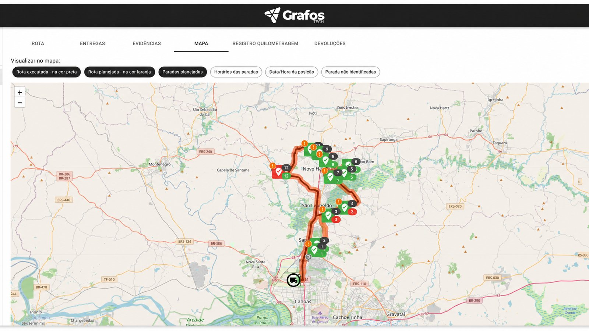

O pedido entra o dia todo. A rota acompanha.
Em autopeças, a expedição despacha várias vezes por dia e o balcão vive respondendo "a peça já saiu?". A Grafos monta cada saída com os pedidos do momento e mostra onde está cada entrega, para o atendimento responder sem ligar para o motorista.

Várias saídas por dia, sem bagunça.
- A cada saída, a Grafos monta a rota com os pedidos acumulados até aquele momento.
- Oficinas, concessionárias e lojas na mesma rota, com entrega fracionada.
- O balcão busca o pedido pela nota e vê em que ponto da rota a entrega está.
- Utilitário, van ou moto no mesmo cálculo, cada um com a sua capacidade.
- Comprovante com foto do canhoto, local, hora e quem recebeu em cada entrega.
Numa autopeças cliente, montar as rotas ocupava 5 pessoas o dia inteiro.
Hoje são 3 pessoas pela manhã, quando o fluxo é maior, e 2 à tarde. O tempo que sobrou foi para outros setores da empresa.
Onde a autopeças perde tempo.
Quando a peça atrasa, a oficina liga para o próximo fornecedor. E quase sempre o atraso começa dentro da expedição.
Pedido que entra o dia todo
Não existe uma carga fechada de manhã. O pedido entra às 9h, às 11h e às 15h, e alguém decide na hora, no papel, o que sai em qual veículo.
Telefone sem fio
O cliente liga para o balcão, o balcão liga para a expedição, a expedição liga para o motorista, que não atende porque está dirigindo.
Veículo saindo pela metade
Na pressa, o utilitário sai com três entregas quando poderia levar oito na mesma região. O custo por entrega sobe sem ninguém perceber.
Devolução sem registro
A peça errada volta com o motorista e o registro é um bilhete. Semanas depois, ninguém sabe quem recebeu, quando voltou e onde parou.
Peça por peça, com comprovante.
Em pedido fracionado, a discussão não é sobre a carga inteira. É sobre aquele item que o cliente diz que não recebeu. Com o comprovante digital, essa conversa termina no mesmo dia.
- Foto, horário e local de cada entrega, direto do app do motorista.
- Assinatura de quem recebeu, com o nome registrado.
- Motivo registrado para recusa, troca e devolução.
- Histórico por cliente, para achar o endereço ou o processo que sempre falha.
O que a autopeças pergunta.
A Grafos funciona para quem faz várias saídas por dia?
Sim, é o dia a dia de autopeças. A rota pode ser montada a cada saída, com os pedidos que entraram até aquele momento.
Dá para encaixar um pedido urgente numa rota que já saiu?
O painel mostra onde está cada veículo e o que falta entregar. Com isso, o gerente de expedição decide se o urgente entra na rota atual, sai numa nova saída ou espera a próxima, sem precisar ligar para ninguém.
Como o cliente acompanha a peça?
O balcão vê em que ponto da rota está cada entrega e pode mandar ao cliente um link de rastreio, em vez de repetir que a peça já saiu.
E as entregas de moto?
A roteirização considera a capacidade de cada veículo, então utilitários, vans e motos entram no mesmo cálculo. O app do motorista é o mesmo para todos.
Traga um dia da sua expedição para a demonstração.
Quantas saídas, quais veículos e aqueles pedidos urgentes que sempre bagunçam a rota. A gente mostra como fica na Grafos.
Agendar demonstração